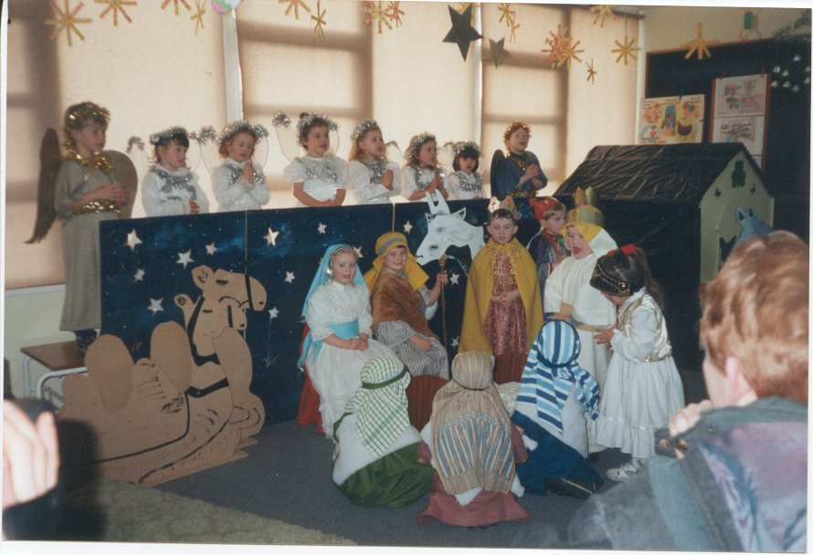

Community Artist
The role of the community artist is teaching art to both children and adults in both Clonmel and in outreach areas. They also work with disadvantaged people such as long term unemployed, lone parents and disadvantaged groups. They also get involved with projects that are ongoing in the art centre such as making puppets for the Christmas carnival and organising floats for parades.

NATIVITY PLAY IN A LOCAL PRIMARY SCHOOL